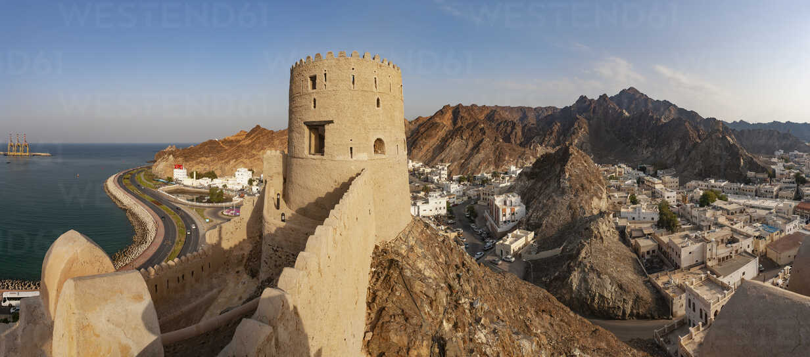
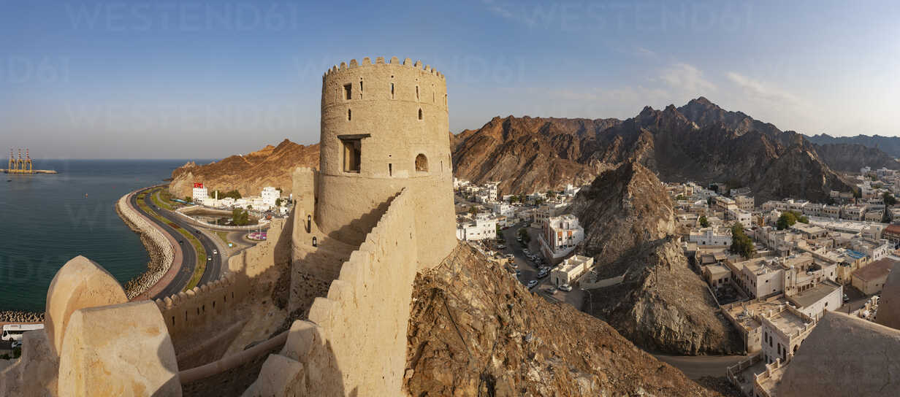
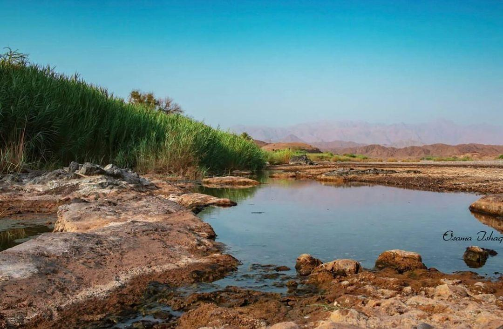
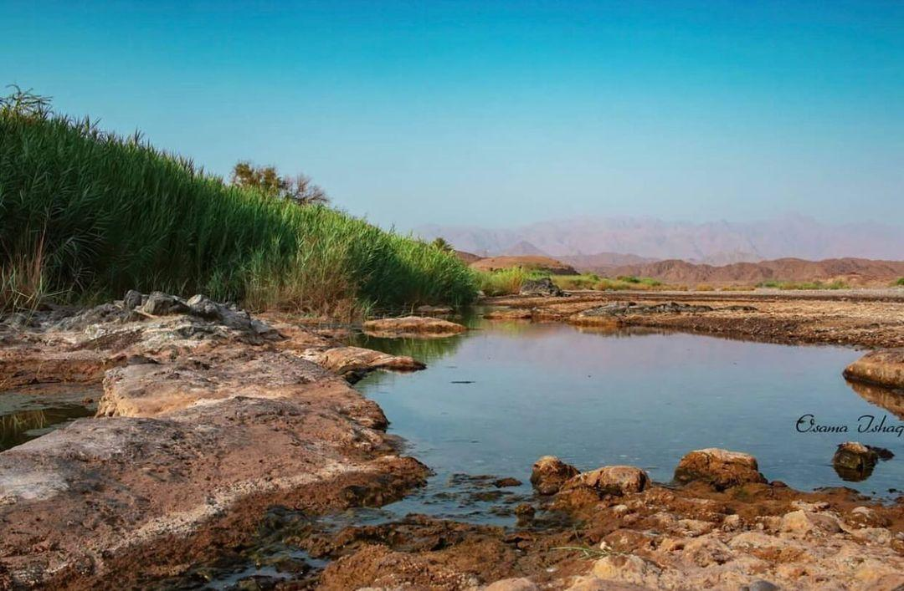
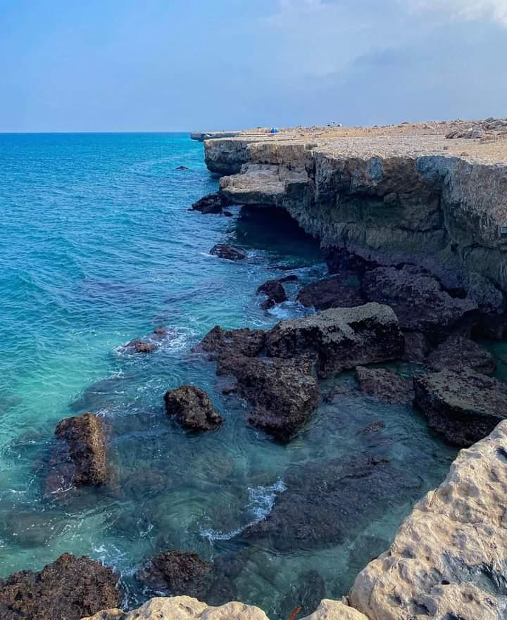
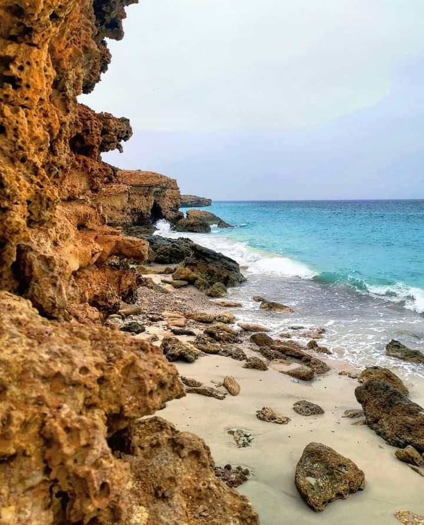
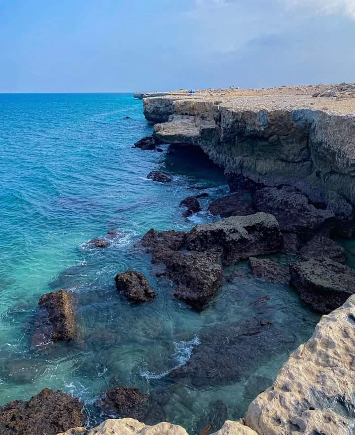
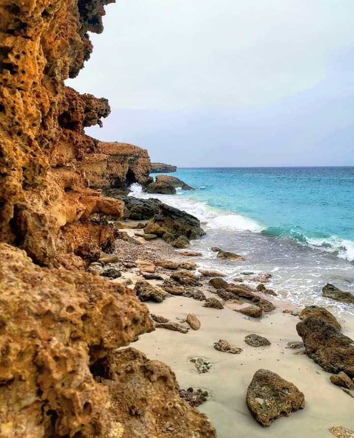

Mutrah City
'The heart of Muscat', Muttrah is surrounded by magnificent mountains and is home to many historic landmarks. This area boasts one of the largest sea ports in the region, and is ideally located for ships traveling from Europe to India and China as Muttrah is a centre for commerce.
Carrying out the duties of hospitality is something that all Omanis are very keen on.
 


Seeb City
The Seeb is a city in Oman that is located to the west of the Bawshar wilayat and overlooks Oman Sea with a coastline of 50 kilometers. It contains 24 villages and towns, and has about 140 mosques and a number of historical landmarks, including the Al Khowdh Castle, the Jifnain, Al Rusayl, Al Kharus, Al Sileel, and Wadi Al Hayaa towers. In the past, it was called “Dama and Al Seeb” due to the flow of water. Today, it is known as the “jewel of the capital” because of its comprehensive urban development that has taken place in recent years.
 



Fins City
The village of Fins in Quriyat is known for its beautiful silver sand beaches and attracts many tourists throughout the year. It is located in the far southeast of Quriyat, adjacent to the village of “Bamah” to the north and the village of “Tawi” in the Sur Governorate to the south. To the east is the “Sea of Oman” and to the west are towering Hajar mountain ranges.